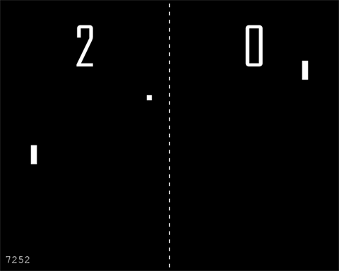

2011-11-16
My choice to do a project for the JavaScript module rather than the assignments resulted in a game which has been published to:
http://figureandsound.com/pong/
Source code: http://figureandsound.com/pong/about/pong.zip (158KB)

The goal of the design of this project was to find a way to incorporate new JavaScript and HTML features with the content of the module. The result is a game that uses canvas, audio, JSON, web storage and offline web applications. It also includes objects, arrays, DOM and BOM manipulation, functions and event handlers.
A further goal for this project was to utilize the require.js library to handle dependencies and modularization.
The project originally included mobile device and touch support, but it was removed before publication due to various reasons.
The decision to recreate PONG was based on its simplicity, which provides the flexibility to incorporate technologies I am interested in learning, but haven't yet found use cases for. I will describe how I used each of these technologies, but first, a little about the game.
I attempted to copy the original gameplay as faithfully as possible. This includes the sizes and speeds of the ball and paddles, the scoring system (which is identical to table-tennis), the interactions between ball and paddles, and the game sounds.
For features that were not part of the original game, such as high scores and the splash screen, I tried to keep them subtle but similar look and feel to the game.
The style and language features I used to create this program are a combination of JavaScript best practices that I am aware of and an attempt to use the language aspects being taught in the module. These include:
In some cases I have opted to use more well supported features where ECMAScript 5 features would be more correct, such as defining accessors. These choices were spurred by an attempt to improve cross-platform compatibility of the program.
Where it seemed logical to modularize the code, I created require.js modules. The main benefits of using require.js to do this is that it handles module dependencies efficiently, and modules are loaded asynchronously.
The main game object has two important methods that it gets from the
helpers/bindable module. The .bind() method allows for the addition
of functions to named collections. The .triggerEvent() method
allows for the execution of the functions in a certain named collection. By
using this design pattern the hope was to make the code more modular and
maintainable, with the potential benefit of improving performance.
Originally the game could be played on mobile devices using touch. The program also included meta information to allow it to behave like a native application. These features were removed before publication. There were two main problems with adapting this game for mobile. The first is that gameplay using touch is awkward due to the fact that the touching finger occludes the game elements. I can think of ways to adapt the game to touch more gracefully, but it would require significantly more development and testing. The other problem is with entering high scores. Because keyboard events behave very differently among mobile devices, implementing this feature as desired would require more research.
I am already well versed in mobile development and multitouch events, so I do not regard this shortcoming as a missed opportunity for learning. Merely, it was a feature set that was spontaneously added to the project, but removed due to time constraints.
This game uses HTML5 canvas to render the main game interface. On each tick, a series of functions are called which draw the various layers to the canvas based on the state of the game objects. These objects change dynamically based on a simulation that is also performed on tick.
I created a small JavaScript module that allows for the creation of sound objects using HTML5 audio. These sounds are played when various events take place in the game, such as when a player scores.
The Web Storage API was used to save the high scores (fastest wins) locally on the client. Because these values are stored as strings, the JSON API was used to serialize and unserialize the high score objects.
A manifest file was created to indicate the files needed to be cached for the application to be used when the client is not connected to the internet. Because the high scores are stored in local storage, they are also available offline.
Player controls utilize the helpers/keyboard module. This module simply stores a collection of the currently depressed keys. This information is used in the simulation to dictate player movement.
One new technology that I am interested in researching is Web Sockets. This game presents an opportunity to learn the fundamentals of passing game data over a network using a full-duplex connection. I understand that this could be major undertaking, and I plan to read up on Web Sockets before part 2 of the Dynamic HTML & JavaScript module to determine whether this would be a reasonable undertaking for that project.
Reworking the game to be fun to play on mobile devices is entirely possible. It may take several iterations to find the best controls and interfaces, but if the opportunity presents itself, I may consider undertaking the development of those features.